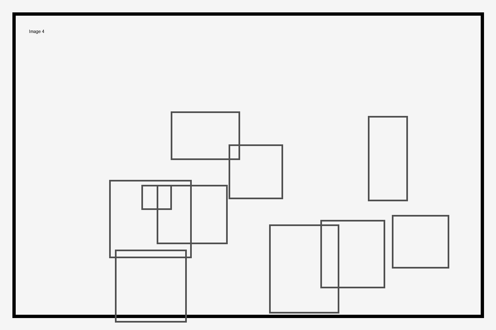

About Me (Class Version)
This page explains what the site is for and shows that the navigation works between two active pages.
I will keep adding content as the course continues. For now, the focus is correct structure, required tags, and clean organization.
Line break example:
Here is the next line.
Table
| Topic | Example | Notes |
|---|---|---|
| HTML | Paragraphs | Used for readable text |
| Structure | Article + Aside | Separates main vs extra info |
| Navigation | Nav bar | Links pages together |
| Media | Images | Must include alt text |
Unordered List
- Use correct HTML tags
- Keep file and folder names consistent
- Test navigation links
- Add alt text to images
Image
